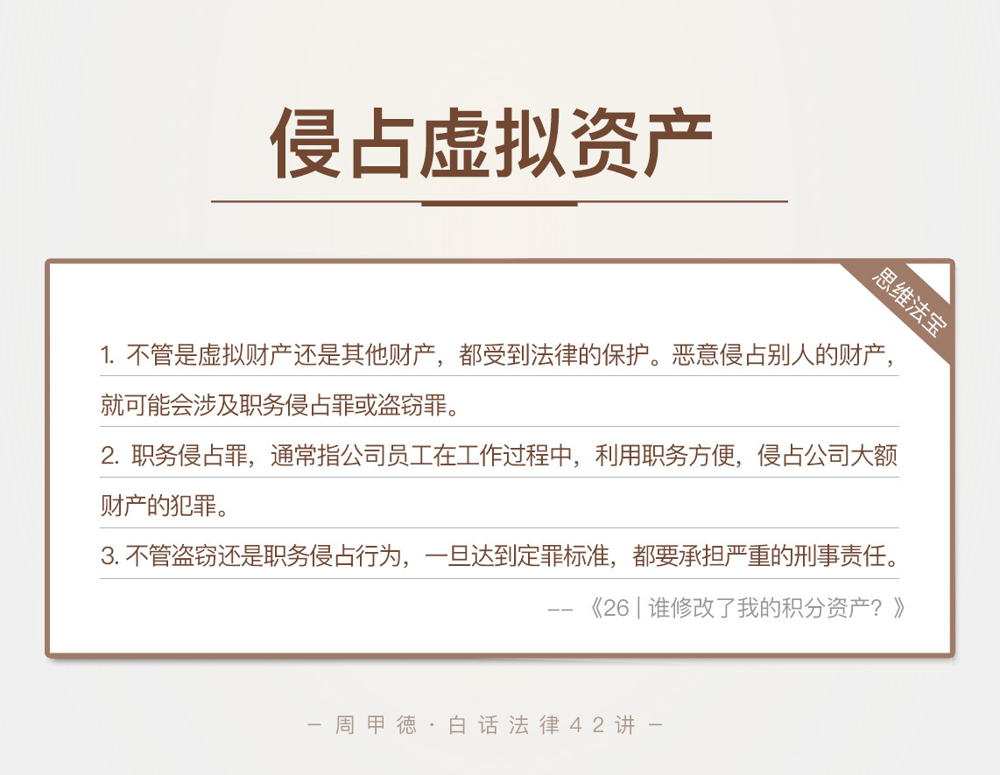

- 00 开篇词 这年头，你真应该懂点法律常识.md
- 01 “老周，我想知道” 常见法律认知盲区（一）.md
- 02 “老周，我想知道” 律师就在你身边（二）.md
- 03 “老周，我想知道” 律师就在你身边（三）.md
- 04 “老周，我想知道” 律师就在你身边（四）.md
- 05 创业未捷老板跑，社保工资哪里讨？.md
- 06 保密还是“卖身”，霸王条款怎么看？.md
- 07 编造流言蹭热度？看守所里降温度！.md
- 08 合同在手欠款难收，报警有用吗？.md
- 09 致创业：谁动了我的股权？.md
- 10 又见猝死！工“殇”究竟是不是工伤？.md
- 11 期权的“前世今生”.md
- 12 裁员面前，你能做的还有什么？.md
- 13 抄袭、盗图为什么做不得？.md
- 14 加班、工资、休假，你知道多少？.md
- 15 受贿原来这么“容易”.md
- 16 今天你用“VPN”了吗？.md
- 17 漏洞在眼前，可以悄悄破解吗？.md
- 18 “爬虫”真的合法吗？.md
- 19 非法集资到底是个啥？.md
- 20 黄色网站？不仅仅是“黄色”罪名.md
- 21 谁修改了我的积分资产？.md
- 22 外挂真能大吉大利吗？.md
- 23 如何看待“从删库到跑路”？.md
- 24 “伪基站”是你的避风港吗？.md
- 25 “网络诈骗”真的离你很远吗？.md
- 26 智斗中介：“北上广”租房图鉴.md
- 27 买买买！买房的“避坑”指南.md
- 28 闪婚又闪离，彩礼怎么理？.md
- 29 离婚还想和平？你要这么做.md
- 30 遗产继承的爱恨情仇.md
- 31 骗术升级？假结婚、假离婚的那些事儿.md
- 32 孩子学校受伤，谁之过？.md
- 33 如何让欠债还钱真正“天经地义”？.md
- 34 从透支到盗刷：人人须知的银行卡纠纷.md
- 35 远离“套路贷”的套路大全.md
- 36 危险！酒驾为什么被罚那么重？.md
- 37 老人倒地，“扶”“不服”？.md
- 38 “能动手就别吵吵”，代价你真的知道吗？.md
- 39 发生交通事故，如何处理？.md
- 40 交通事故综合法宝.md
- 41 婚姻家庭综合法宝.md
- 42 买卖房屋综合法宝.md
- 一键直达 法律专栏“食用”指南.md
- 加餐 “新冠肺炎”影响下，17个常见法律问题解答.md
- 结束语 法律，不会终止的篇章.md
21 谁修改了我的积分资产？
80后、90后的回忆里，一定包括了各类社交软件和游戏。还记得几年前，积分充值会员升级，开通红钻、黄钻等装扮自己的账号，各类玩法在年轻人中特别流行。不过，涉及到花钱的事情，总会有些风险隐患。
Q币被盗了，积分减少了、莫名其妙降级了，这类游戏里的资产，或者可以叫做网络虚拟财产的东西，引起的纠纷也是逐渐增多。
虽然法律对于虚拟财产还没有特别明确的定义，但是虚拟财产的价值毋庸置疑，也得到了社会的广泛认可。今天我们就来看看虚拟财产的问题。
先来看这样一个真实的案例。
前端程序员小马，是一款“捕鱼”游戏的重度玩家，闲暇时间基本都花在了游戏上，乐此不疲地升级、获取积分然后提现。有一次，他发现这个游戏的积分兑换系统有明显漏洞，他可以借此修改系统后台的数据，获得大量积分，然后提现。
发现了这一点后，小马又研究了不少游戏网站，都找到了类似漏洞。商机砸脸上，要还不是不要呢？小马陷入了挣扎中。
细化一下小马的问题，其实主要有这么三点。
利用这些网站的漏洞，修改积分获利是否违法？
如果违法，有什么后果呢？
其它方式，比如利用工作便利，获得积分再提现，又会怎样呢？
这里，我们先需要了解几个法律知识。
法律知识
网络虚拟财产
开头我们提到过，这类积分、游戏币，可以叫做网络虚拟财产。网络虚拟财产跟我们平常所说的财产有什么关系呢？
其实，法律上的财产，一般指的就是货币，或者其他可以用货币兑换的物品。所以前面学过的房子、车子、存款，都属于这个范围。
而网络虚拟财产，尤其是我们接触比较多的网络游戏中的虚拟财产，主要包括账号等级、游戏装备、游戏币和积分等。这些东西大多是玩家花费大量时间、精力和金钱得到的，自然具有价值，同时一般也能用货币兑换（比如账号转卖、设备转卖、提现等），所以也是一种财产。
所以，不管是虚拟财产还是其他财产，都受到法律的保护。恶意侵占别人的财产，就可能会涉及职务侵占罪或盗窃罪。
职务侵占罪
职务侵占罪，指单位员工，利用职务便利，非法占用单位大额财产的行为。根据这个定义，我们也能看出，这个罪名的三个客观要素：
利用自己职务的便利，不管是直接还是间接方式都算数；
有侵占的行为，不管是侵吞、偷窃还是骗取，非法私有化的行为都属于非法占用；
财产数额比较大，如果数额比较小的也不能算作职务侵占，最低数额一般在5000到20000左右。
另外要注意，这里的单位和员工，不包括国家机关、事业单位等，也不包括国家工作人员，国家工作人员如果有同样的行为，属于贪污罪。
换句话说，职务侵占罪，适用的是非国家财产发工资的人。
职务侵占罪，其实大多还是因为公司管理不到位，给某些特殊岗位的员工留了漏洞，创造了违法的条件。不管因为什么原因起了贪念，走错一步就是犯罪之路。
盗窃罪
顾名思义，盗窃一般是指秘密窃取别人的东西，并占为己有的行为。不过，随着时代的发展，秘密窃取四个字你可以看成是通俗的说法，因为我们生活中大张旗鼓的盗窃事件也不少，所以盗窃不一定是秘密的手段。
盗窃的东西自然有一定的经济价值，而构成盗窃罪，对于数额也有一定的要求。
情景分析
现在我们在来看小马遇到的问题。
如果小马利用网站的漏洞，通过修改系统获得积分，并且提现来获利，显然是违法的。
虽然他直接获得的只是虚拟的积分，但积分本身有价值，可以直接提现，属于网络虚拟财产。而这一行为的主观上有非法占有的故意，客观上也有秘密窃取的手段，符合盗窃罪的条件。
至于盗窃的后果，各地要求不一。拿北京来说，如果盗窃数额超过2000元，就达到了盗窃罪的认罪标准，会被追究刑事责任。不过这里要注意，这里的2000元标准，指的是盗窃的数额，而不是你具体获利的数目。
第三个问题，小马如果利用工作便利，将可以提现的积分占为已有，那可能就是职务侵占罪了，具体能否构成，当然还要看数额等情况。
思维法宝
随着互联网技术的普及和发展，网络虚拟财产的范围会越来越广，相应的纠纷肯定也会越来越多。还是那句话，网络从来不是法外之地，网络虚拟财产的价值属性越高，相对应的，法律保护力度也一定会越大。
网络世界不越界，可以说我们的原则。你觉得可以获利的东西，在别人那里可能就是实实在在的财产，如果随意越界，轻一点的可能是民事责任，严重就是刑事犯罪了。-

最后，我们来总结一下今天的内容。
职务侵占罪，通常指公司员工在工作过程中，利用职务方便，侵占公司大额财产的犯罪。
不管是盗窃或是职务侵占行为，一旦达到定罪标准，都要承担严重的刑事责任。
虽然一两次的小额窃取，往往很难被发现，但是你要知道，人的本性是贪婪的。有了第一次第二次，就会有第三次第四次，大贪都是从小贪开始的。另外，这两种犯罪的认定，都是可以累计钱数的，并不是只看你被抓住这一次的后果。所以，莫伸手才是聪明的做法。
最后我想留一个思考题。在日常工作中，报销虚假的消费行为，违法吗？会有什么后果吗？你可以思考一下，写下你的答案。如果有其他的疑问或者经历，也欢迎你在留言区和我分享。
© 2019 - 2023 Liangliang Lee. Powered by gin and hexo-theme-book.